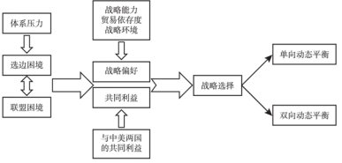
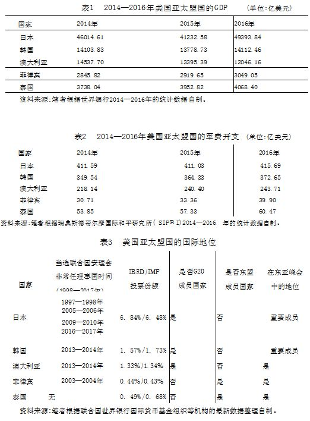
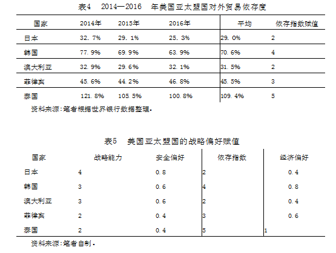

收录于合集

简 介
【作者】 凌胜利 ，外交学院国际关系研究所副教授，博士。
【来源】 《世界经济与政治》， 2018年第3期
【编辑】 李逸成
【审核 】 高嘉琳、庞林立
【内容提要】
**
**
随着中美主导权竞争加剧，亚太国家在中美之间的战略选择深受影响，美国亚太盟国更是在一定程度上面临着联盟与选边的双重困境。 美国亚太盟国如何应对中美竞争，既有研究从国内政治、联盟政治、结构现实主义、新古典现实主义四个视角进行了分析。作者尝试基于新古典现实主义的视角，分析美国亚太盟国在中美之间的”动态平衡”战略。国际层面主要关注体系压力，国内层面主要聚焦战略偏好与共同利益。研究发现，美国亚太盟国为了缓解其所面临的双重困境，依据其面临的双重困境强弱，会基于战略偏好和共同利益在中美之间实施动态平衡，其战略选择体现为暂时优先考虑中美一方的单向动态平衡或双向动态平衡。为了便于更加清晰地理解美国亚太盟国的动态平衡战略，作者以2016年因”萨德”入韩所导致的”韩国转向”和杜特尔特上台所引发的”菲律宾转向”进行了案例研究。对于中国的政策启示而言，美国亚太盟国并非一味地追随美国，而是希望在中美之间寻求动态平衡，尽可能地兼顾经济和安全利益。中国应尽可能地去调适美国亚太盟国的战略偏好或利益关系，进而影响它们的动态平衡战略。
【关键词】
亚太主导权；动态平衡战略；选边困境；双重困境；战略偏好
**一 、 引言 **** ******
自 “萨德”入韩以来，中韩关系深受重创，韩国也从此前在中美之间”左右逢源”转变为”左右为难”。而在菲律宾，自罗德里戈·杜特尔特（Rodrigo Duterte）执政以来，中菲关系不断修复，菲律宾谋求”大国平衡”以拓展战略空间。同为美国亚太盟国，“韩国转向”和“菲律宾转向”反映了美国亚太盟国在中美之间的战略选择困境。韩国执意部署”萨德”系统，导致中韩关系急剧恶化，也使得韩国的战略选择严重受限。对于菲律宾而言，杜特尔特一改前任阿基诺三世（Benigno Aquino Ⅲ）的对华政策，积极修复与中国的关系，重回“大国平衡”，使得中菲关系峰回路转，但却导致美菲关系相对疏远。“韩国转向”和“菲律宾转向”反映了亚太二元格局的内在困境，即亚太国家在中美之间寻求平衡变得更加困难，更多只能寻求动态平衡。
当前，中美两国是亚太地区最为重要的国家，中美关系对亚太地区秩序的塑造具有重要影响，也在一定程度上成为亚太地区的”体系结构”或”体系压力”，影响着其他国家的战略选择。随着中美亚太主导权竞争加剧，①亚太国家在中美之间的战略选择空间有所缩小，也在一些情况下导致美国亚太盟国的选边困境日益凸显。这种选边困境主要体现为这些国家在中美之间的选择困境：一方面，增强与经济伙伴中国的关系会削弱与美国的联盟关系；另一方面，增强与美国的联盟关系又容易冲击与中国的伙伴关系。对于美国亚太盟国而言，一方面，它们与美国的联盟关系由来已久，在安全上对美国也存在不同程度的依赖；另一方面，中国是它们的重要甚至是头号贸易伙伴，与它们的经济增长密切相关。无论是中国还是美国，对这些国家都非常重要，处理好与中美两国的关系对其不乏挑战。
对于美国的亚太盟国而言，其在中美之间到底采取何种战略，影响其战略选择的因素、决定其战略选择的逻辑都是值得探讨的问题。即便是在中美之间实施“平衡战略”，但也并非在中美之间等距离平衡，而是不断调整的”动态平衡”，其动态平衡是否存在一定的规律，这些问题都值得深入分析，从而有助于更好地理解美国亚太盟国对于中美亚太主导权竞争的认知与回应。本文也主要据此进行分析，探讨在中美主导权竞争加剧的情况下，美国亚太盟国的战略选择的原因及其规律。
**二、既有研究及不足 **** ******
目前，国内外学术界对于美国亚太盟国在中美之间的战略选择的分析主要是从国内政治、联盟政治、结构现实主义、新古典现实主义四个视角。
一是国内政治的视角。 该视角认为美国亚太盟国的战略选择主要基于国内政治因素考虑，领导人的个性、选民的诉求、国家利益的需求等是决定美国亚太盟国应对中美战略选择的主要原因。首先，领导人的个性会影响美国亚太盟国在中美之间的战略选择。就菲律宾杜特尔特上台以来对中美关系的调整而言，很多分析认为杜特尔特的个性是重要原因。个人化的外交政策（personalized foreign policy）制定影响了一些美国亚太盟国的战略选择。其次，选民的诉求会影响这些国家的战略选择。对于民主国家而言，选民的态度对国家的对外战略选择有着重要影响，构成了国内观众成本。再次，对国家利益的务实考虑决定了国家战略选择。美国亚太盟国之所以要在中美之间尽力寻求平衡，其目的也在于尽可能地维护国家在经济、安全等方面的综合利益。此外，国内政治还与国内政治结构、政治派系、利益集团等因素密切相关，这些也成为影响美国亚太盟国战略选择的重要因素。
二是联盟政治的视角。 在该视角看来，美国亚太盟国的战略选择与其联盟关系密切相关，深受美国影响。美国作为联盟中的主导者，拥有更强的谈判能力，对其盟国对外战略的影响不容忽视。美国基于亚太主导权竞争的需要，对其盟国的战略协同要求也在提升。美国可以通过强制、交换、权威等多种方式来影响盟国的对外行为，或者通过地位信号传导和霸权的印象管理影响亚太盟国对其亚太战略的支持。美国管理其盟国的主要目标之一是防止这些国家与中国的交往超出美国的预期。由此可见，美国为了自己的战略需求，可以影响甚至主导其盟国的对外战略。而美国的亚太盟国由于对美国的安全依赖，其对外政策在一定程度上也不得不追随美国。
三是结构现实主义的视角。 该视角主要将中美在亚太地区所形成的结构性压力视作美国亚太盟国应对中美战略选择的主要原因。对于亚太国家而言，中美两国是塑造亚太地区结构的主角，中美关系成为地区结构的主导因素。与此同时，中美亚太主导权竞争加剧了地区分化，使得地区内国家在中美之间的战略选择困境加剧。在结构现实主义看来，为了应对中美大国竞争，其他国家被迫采取制衡、追随、防范和接触等战略。不过这些国家的战略选择很大程度上受制于中美竞争所形成的结构性压力。但是美国亚太盟国对于中美竞争所形成的结构性压力的感知存在差异，受结构性压力影响的程度也不尽相同，这些问题都有待深入研究。
四是新古典现实主义的视角。 新古典现实主义主张将体系因素与国内因素结合起来理解国家的对外政策。对于美国亚太盟国而言，其应对中美的战略选择一方面受中美关系所决定的地区结构影响，另一方面也不乏国内政治的需要，体系压力和国家战略偏好都是决定这些国家战略选择的重要因素。中美竞争是影响体系压力的主要因素，也在一定程度上决定了其他国家的战略空间。即便如此，这些国家的战略选择也是基于对体系压力的认知，结合国内政治的需要，尽可能做出符合自身国家利益的战略选择。虽然这些研究并非完全针对美国亚太盟国，但也并未排除美国亚太盟国。这也使得美国亚太盟国的战略选择同样适用于新古典现实主义的分析路径。
总之，如何看待美国亚太盟国在中美之间的战略选择，上述四种视角都提供了一定的解释，不过也存在一些不足之处。国内政治的视角对于美国亚太盟国的战略选择虽有一定的合理性，不过现实情况却是美国亚太盟国在中美之间寻求平衡变得非常困难，这说明中美互动所形成的体系压力的变化不容忽视。联盟政治的视角阐述了美国因素对其亚太盟国战略选择的影响，不过随着美国对其盟国主导能力的下降，它对这些国家对外战略的影响力也有所下降。结构现实主义的视角反映了中美关系所形成的结构压力对亚太盟国战略选择的影响，但忽视了亚太盟国对这种结构压力的感知差异和战略自主性诉求。相对而言，新古典现实主义的解释力要更强一些，对于美国亚太盟国而言，无论是美国还是中国，都缺乏完全主导这些国家战略选择的能力。美国亚太盟国也有自己的战略自主性诉求。新古典现实主义的视角综合考虑了体系压力和国内政治两类因素的影响，不足之处在于对战略偏好的形成和测量、战略选择的动态性分析还不够详细。
**三 、美国亚太盟国的双重困境 **** ******
对于联盟而言，联盟困境始终如影相伴，联盟内部存在“被抛弃”和“被牵连”的困境。
从联盟困境来看，随着中美战略竞争的加剧，美国对盟国的战略需求有所增加，对盟国的战略协同诉求增多。就美国亚太联盟内部的联盟困境而言，美国一方面害怕盟国的支持不够而无法与中国展开竞争，“被抛弃”担忧有所加剧，因而想方设法强化联盟关系，加强战略协同。对于美国而言，其亚太主导权的重要基础就是联盟关系和伙伴关系。美国维持在亚太地区的主导地位需要加强联盟关系，通过发挥盟国的作用，让盟国承担更多的责任，在一定程度上弥补美国战略资源的不足。另一方面，美国为了寻求盟国支持，作为回报会提升盟国的自主性，这又使得美国”被牵连”的担忧有所加剧，其结果形成了美国亚太联盟的“承诺难题”和“约束困境”。对于美国亚太盟国而言，其联盟困境也有所变化。对它们而言，总体趋势是”被抛弃”的联盟困境有所下降（当与中国的安全矛盾激化时例外），因美国战略支持需求“被牵连”的联盟困境有所增强。美国亚太联盟的联盟困境变化也成为联盟调整与转型的重要动力。
对于美国亚太盟国而言，不仅内部的联盟困境有所变化，外在的选边困境也日益凸显。并非中美竞争就一定会导致美国亚太盟国形成选边困境，而是一旦中美竞争涉及美国亚太盟国，它们在发展与中美两国的关系时相互抵消的程度就会增强，与中美两国关系的发展形成零和博弈，此时便形成了选边困境。在亚太地区，由于中国和美国实力显著且在不同领域各具优势，使得亚太地区被称为二元格局（也可理解为比较松散的两极格局）。中国对地区的经济影响日益增强，导致美国亚太盟国对中国的经济诉求增大，但安全上还是更加信赖美国。由于中美两国在经济和安全领域的不同优势在短期内不会变更，二元格局深刻地影响了亚太国家的战略选择。不过随着亚太地区由“松散两极体系”转变为“紧密两极体系”，或者说亚太地区由“二元格局”转变为“两极格局”，亚太其他国家的战略空间会有所缩小，美国亚太盟国更是如此，选边站队压力增大。
即便是二元格局，也并非没有问题。从长远来看，由于亚太地区经济与安全不可能长期分离，二元格局也面临着持续难题。对于美国的亚太盟国而言，当然也无法长期将经济利益和安全利益割裂。美国亚太盟国安全上或多或少都对美国存在依赖，而经济上目前中国是澳大利亚、泰国、韩国、菲律宾的第一大贸易伙伴，是日本的第二大贸易伙伴。如何克服中美竞争对其安全利益与经济利益的分化效应，已成为美国亚太盟国的选边困境，深刻地影响着这些国家的战略选择。
对于美国亚太盟国而言，联盟困境和选边困境对它们的外交政策都有影响。联盟困境主要影响美国亚太盟国的联盟政策，而选边困境则影响盟国在中美之间的战略选择。韩国的选边困境最为典型，围绕着“萨德”入韩产生的问题，很多观点认为这是韩国在中美之间左右为难的产物。菲律宾同样也在中美之间面临选边困境，地缘政治差异和战略优势迥异使得菲律宾对中美两国都有所诉求。实际上，韩国和菲律宾的选边困境并非个案，在美国亚太盟国中或多或少地存在。为了应对选边困境，“两面下注”的对冲战略或大国平衡战略往往被认为是适宜战略。由于中美之间的竞合关系，双方的互动在竞争与合作两条线上并行推进。中美竞合关系的存在使得目前亚太地区更多呈现比较松散的两极格局状态（二元格局能够得以存在），也使得亚太盟国有可能同时与中美保持良好关系，但也存在相互抵消的潜在风险。中美亚太主导权竞争归根结底还要看两国在亚太地区的朋友的多寡，实现“集势以胜众”的效果，因而中美两国都会积极争取其他国家（包括美国亚太盟国）的支持。美国亚太盟国也会利用中美的这种需求，在中美之间左右逢源，实施大国平衡战略，这也被认为是目前的合理选择。
美国亚太盟国不仅面临着联盟困境与选边困境的双重困境，两大困境之间还存在着较为密切的关系。一般而言，一旦中美竞争加剧涉及美国盟国，体系压力增大，选边困境增大，与此同时，美国亚太盟国根据其所面临的双重困境的强弱做出选择，如果是“被牵连”困境增强，会优先考虑选边困境；如果是“被抛弃”困境增强，会优先考虑联盟困境。为了应对双重困境，美国亚太盟国只能在中美之间实行动态平衡，从而缓解双重困境的压力，更好地实现本国的利益。
虽然学者们大多认可在选边困境下采取“大国平衡战略”或“对冲战略”对美国亚太盟国而言是明智选择，不过在这种战略实施的困难上存在分歧。相对而言，无论是大国平衡战略还是对冲战略，美国亚太盟国都不是对中美两国均等对待的“等距离外交”，而是不断动态地调整与中美两国的关系，进而缓解其双重困境。因此，对于美国亚太盟国在双重困境下的战略选择，需要分析其战略原理和调整机制，把握其“动态平衡”的基本规律。
**四 、动态平衡:美国亚太盟国的战略选择 **** ******
本文将大国平衡战略界定为国家为了在多个大国之间寻求相对有利的处境，尽可能获取较大的战略自主性，避免过于依赖某一大国而寻求同时与其他大国保持良好关系，从而可以周全地实现国家的多种战略偏好。 这既避免了“选边站队”，也不意味着在大国之间实施等距离外交。即便是美国亚太盟国，也有可能在中美之间实行大国平衡战略。毕竟美国亚太盟国基于实力考虑的”选边站队”政策容易导致新的安全问题，它们在中美间扮演制度推动者和观念沟通者的角色更加值得倡导。
不过无论是哪种平衡，都意味着这些国家想同时与中美两国保持较为良好的关系。由于目前中国与美国在实力上还是有不少的差距，因而中美主导权竞争是一个相对漫长的过程，这也意味着亚太国家在中美之间的战略选择困境仍将持续较长一段时间，在中美之间实行动态平衡也很有必要。
本文认为，美国亚太盟国为了缓解其所面临的双重困境，会基于战略偏好和共同利益在中美之间实施动态平衡，其战略选择体现为暂时优先考虑中美一方的单向动态平衡或灵活发展与中美双方关系的双向动态平衡。单向动态平衡是指暂时与中美其中一方增进关系，以削弱其所面临的双重困境，进而在双重困境缓解后可以较为灵活地实施双向动态平衡；双向动态平衡是指可以相对灵活地发展与中美双方之间的关系且不会使其面临的双重困境过分加重。
图1双重困境与美国亚太盟国的动态平衡

资料来源：笔者自制。
体系压力是指亚太地区的体系压力，主要受中美关系影响。对亚太国家而言，这种体系压力将决定它们的战略空间，影响它们在依赖性与自主性上的选择困境。在本文研究当中，基本认可将中美关系视为体系压力的主要影响因素。随着中美竞争加剧，亚太盟国所面临的体系压力增大，而随着中美关系缓和，体系压力也随之削弱，不过如何判断体系压力至关重要。
虽然学术界基本认可中美关系是影响亚太地区体系压力的主要因素，但如何较为准确地把握体系压力还有待深入研究。刘丰认为，“体系压力由地区体系在结构和进程两个维度的特征决定。结构主要表现为大国之间的实力分布及其变化趋势，而进程则取决于崛起国与体系内其他大国（尤其是主导国）之间的互动模式。由此将体系分为强对抗体系和弱对抗体系”。至于如何判断竞争强度，需要考虑到议题领域的差异，区分安全领域与其他领域的不同。相对而言，权力变动比较好观察，而大国互动模式或者大国竞争关系却不好判断。本文认为，由于中美实力对比的变化一直缓慢延续，对于体系压力的考察可更关注中美在亚太地区的竞争强度，主要有两个维度:一是竞争领域的广度；二是竞争的烈度。
就竞争领域的广度来看，围绕亚太地区主导权竞争，中美正在走向全面竞争，中美战略竞争涵盖经济、科技、政治、军事、地区机制等多个领域。中国实力的增强导致其对国际地位的诉求提升，但美国并不愿意释放权力空间，这也导致中美的竞争几乎在所有领域出现，而不仅仅是核心的安全、经济领域，美国也以此挤压中国的战略发展空间，而中国应对美国战略挤压的行为被视为“强势外交”，中美之间战略竞争因此加剧。简而言之，中美之间的竞争广度较以往更多一些，实现了从经济领域向安全领域的扩大，从利益竞争向规则竞争的演变，从双边领域向地区、全球层次的拓展，中美在亚太地区的竞争也越来越具有地缘意义和战略意义。
就竞争的烈度来看，可以有三个观察维度:其一是中美竞争不流于形式，对深层次的规则、秩序的竞争日益显著，由战术竞争转变为战略竞争。奥巴马政府期间，对规则主导权尤为重视，随着中国实力的增强，中国也更加有能力和意愿参与周边事务，近年来在国际规则制定上也更加积极主动。这也导致中美两国在亚太地区的规则竞争趋向激烈，中国提出的亚洲新安全观、亚洲基础设施投资银行（亚投行）、“一带一路”倡议，美国都从深层次的规则和秩序角度予以应对，以此限制中国地区影响力的拓展。中美竞争加剧使得美国对盟国在地区制度参与上的限制增强。其二是对友好国家（朋友）的竞争强度。中美两国都将获得更多国家的支持视为地区主导权的基础。中美主导权竞争促使两国增强了对友好国家的战略需求，从而要求这些国家与其保持一致性。从美国阻止盟国和伙伴参与“一带一路”、亚投行来看，实际上就是朋友竞争烈度的表现。其三是对核心利益的竞争强度。中美两国竞争的底线实际上涉及对彼此核心利益的包容程度。比如中美新型大国关系中“相互尊重”实际上就包含了对核心利益的认可。不过中美两国在对彼此核心利益的认知上存在分歧。就中美竞争强度的判断而言，可以主要观察美国对待中国核心利益的态度。
总之，中美亚太主导权竞争越激烈，体系压力就越大，如果中美竞争涉及盟国，美国亚太盟国的选边困境就越强烈，国家偏好也就更难多元化兼顾，战略选择困境增大。
除了体系压力外，美国亚太盟国的战略选择也受到战略偏好的影响。 国家战略偏好分为安全偏好和经济偏好两种。安全偏好包括国家所追求的安全目标和对安全利益的认知。经济偏好主要是指国家对与外部国家或地区发展经济关系的需求和对经济利益的认知。本文主要依据战略能力来界定国家的安全偏好强度、对外贸易依存度界定国家的经济偏好强度。
国家战略能力是指运用国家战略的能力，相较于综合实力而言，更能体现国家重要性和国际影响力。判断一个国家的战略能力，基本上可以从经济、军事和国际地位三个方面进行观测。经济方面主要以国内生产总值（GDP）作为参考（见表1）；军事方面主要以军事开支为衡量标准（见表2）；国际地位则主要参考国家在重要的国际或地区组织中的地位（见表3）。一般而言，国家的战略能力越强，就越有能力追求独立性，其对安全利益的偏好也会更强烈一些。国家战略能力越大，其应对双重困境的能力也就越强。国家战略能力的差异不仅决定了国家战略选择的空间，也影响了国家的利益认知与诉求。

经济偏好主要由国家的对外贸易依存度决定。一国的对外贸易依存度越高，反映其与外部的经济联系越密切，也越有动力追求与其他国家保持良好的经贸关系。和平时期选民的态度往往与经济状况息息相关，国内支持与选民对经济的满意程度密切相关，因而政府的对外政策需要不断为国内经济发展创造较好的条件。对外贸易依存度反映了国家经济发展的外部影响强度，也决定了国家对外政策中的经济偏好强度。
本文主要将国家的战略偏好区分为安全偏好和经济偏好，并且对不同偏好的强度赋予系数。对于美国亚太盟国而言，如何在不同偏好中进行权衡，既要考虑到偏好系数的差异，也要考虑战略环境对战略偏好的影响。战略环境可以区分为特殊战略环境和一般战略环境:特殊战略环境是指国家面临的安全威胁较为紧迫，战略选择受限较多；一般战略环境是指国家并不面临着较为紧迫的安全威胁，战略选择相对有限。国家的战略偏好并非一成不变，而是随着战略环境的变化有所调整。一般而言，如果国家面临比较紧急的特殊战略环境，其对安全利益会更关切，安全偏好会增强一个等级，而经济偏好则降低一个等级；如果是较为一般的战略环境，其会回归正常的战略偏好。战略环境对战略偏好的变化发挥着干预变量的作用。战略能力的差异会影响国家对不同类型利益的认知。相对而言，国家战略能力越强，其安全偏好也会越强。依据自身战略能力，国家对于本土安全、周边安全、地区安全、全球安全的诉求存在一定的差异，强国、大国更有战略能力追求国境之外的安全，因而其安全偏好也就更强烈。
从表1美国亚太盟国GDP来看，2014—2016年，日本GDP位居世界第3位，可以称得上是世界经济大国；韩国和澳大利亚基本在第10—15位之间，可以视为地区经济强国；泰国在第25—30位之间，菲律宾在第30—40位之间。
就美国亚太盟国军费开支而言，2014—2016年日本和韩国的军事开支世界排名在第5—10位之间，澳大利亚在第10—15位，泰国和菲律宾两国的军费开支规模与GDP排名基本相当。
就美国亚太盟国的国际地位而言，笔者主要选取了这些国家在重要的全球性国际政治组织（联合国）、重要的全球性国际经济组织（世界银行、国际货币基金组织和二十国集团）以及重要的地区性政治经济组织（东盟和东亚峰会）中的地位，可以发现日本国际地位最高，其次是韩国和澳大利亚，最后是泰国和菲律宾。
我们可尝试将不同国家的战略能力区分为五等:战略能力超强的全球性大国，赋值为5；战略能力强，具有全球影响的地区大国，赋值为4；具有地区影响的中等强国，赋值为3；具有次区域性影响的小国，赋值为2；几乎没有国际影响的小国，赋值为1。战略能力决定安全诉求偏好:全球性大国具有全球安全诉求，赋值为1；具有全球影响的地区大国，对全球安全的部分领域有诉求，主要是地区安全诉求，赋值为0.8；具有地区影响的中等强国，有地区的局部安全诉求，赋值为0.6；具有次区域性影响的小国，存在次区域和本土安全诉求，赋值为0.4；几乎没什么国际影响的小国，主要是本土安全诉求，赋值为0.2。综上所述，可以对美国亚太盟国的战略能力参考以上标准进行赋值:日本赋值为4，韩国、澳大利亚赋值为3，泰国和菲律宾赋值为2，三组国家安全偏好诉求赋值分别为0.8、0.6、0.4。
对于一国的经济偏好而言，主要考察该国与外部经济的联系情况，以对外贸易依存度作为参考标准。对外贸易依存度会影响国家的经济偏好。依据对外贸易总体依存度，其经济偏好可以做如下赋值:对外贸易依存度在80%以上，依存指数可赋值为5，经济偏好赋值为1；60%—80%，依存指数可赋值为4，经济偏好赋值为0.8；40%—60%，依存指数可赋值为3，经济偏好赋值为0.6；20%—40%，依存指数可赋值为2，经济偏好赋值为0.4；20%以下，依存指数可赋值为1，经济偏好赋值为0.2。对于美国亚太盟国而言，根据其过去三年的平均对外贸易依存度，可以发现日本的经济偏好为0.4、韩国为0.8、澳大利亚为0.4、菲律宾为0.6、泰国最高为1。

**除了战略偏好之外，共同利益也是影响美国亚太盟国战略选择的重要因素。 “**共同利益是相互依赖状态下国家利益存在共性或趋同的部分，由共同收益和共同威胁所构成，并在双边、多边和全球框架内形成国际合作的基础。”共同利益对于国家战略具有重要影响，如果A国与B国之间的共同利益较多，A国会更倾向于增进与B国的关系。对于美国亚太盟国而言，它们与中美两国在安全和经济方面都存在共同利益，美国亚太盟国在中美之间实行动态平衡也离不开它们对与中美两国的共同利益的权衡。
总之，美国亚太盟国在中美之间的战略选择是基于体系压力、战略环境、战略能力和共同利益权衡的结果，体现为动态平衡。美国亚太盟国中美之间的动态平衡时也可以视为同时对中美两国实施双向对冲，其意图在于寻求兼得中国的经济红利和美国的安全保护。 对于美国亚太盟国，其务实的战略选择是尽可能地在中美之间保持相对 平衡。不过这种相对平衡具有动态性，与中美之间的关系具有一定的波动性。
当体系压力不大时，美国亚太盟国的战略选择可以兼顾安全与经济战略偏好，并根据共同利益关系同时增进与中美两国的关系，实施双向动态平衡。当体系压力增大时，如果中美竞争涉及亚太盟国，美国亚太盟国的安全与经济的战略偏好的兼顾会变得困难，形成了选边困境。 美国亚太盟国会根据本国战略偏好、利益的需要暂时实施与中美其中一方改善关系的单向平衡战略或双向动态平衡。不过美国亚太盟国在实施动态平衡时也会影响其所面临的双重困境，从而使得动态平衡有了内在循环的驱动力，其平衡更多呈现过程性而非结构性。具体而言，美国亚太盟国的动态平衡战略呈现如下三种情形:一是当体系压力增大时，如果竞争涉及盟国，选边困境增大，且联盟”被牵连”困境增大，更为关注选边困境。如果是经济偏好较强的话，动态平衡会体现为靠近中国的单向动态平衡；如果是安全偏好较强的话，根据与中美两国的共同利益，如果与中国的共同利益多于与美国的共同利益，更有可能是双向动态平衡；如果与美国的共同利益多于与中国的共同利益，更有可能优先强化与美国关系的单向动态平衡。
二是当体系压力增大时，如果竞争涉及盟国，选边困境增大，且联盟 “被抛弃 ” 困境增大，更为关注联盟困境。 如果是安全偏好强的话，动态平衡体现为强化与美国的联盟关系的单向动态平衡；如果是经济偏好强的话，根据与中美两国的利益关系，如果与中国的共同利益多于与美国的共同利益，更有可能是双向动态平衡；如果与美国的共同利益多于与中国的共同利益，更有可能优先强化与美国关系的单向动态平衡。
三是当体系压力变小时，选边困境出现弱化，美国亚太盟国基于本国的战略偏好和利益关系能够较为灵活地发展与中美两国的关系，双向平衡相对更为容易。
********五 、案例分析
2016年韩国和菲律宾与中美关系的改变可以视为两国动态平衡战略的调整，是两国根据体系压力、战略环境、战略偏好和共同利益所做出的选择，这也意味着未来两国因这些因素的变化将会基于动态平衡而再次调整。
（一）韩国转向
自从2016年7月韩国宣布要部署“萨德”系统以来，中韩关系急剧恶化，韩国在中美之间原先保持的相对平衡战略也暂时破产。韩国为何会调整在中美之间比较舒适的大国平衡战略?
有关韩国部署“萨德”的原因，既有的分析大体总结了六种原因。一是安全威胁的驱动。朝鲜核导试验加剧了韩国的安全威胁认知，部署“萨德”则被韩国政府和民众认为可以在防卫朝鲜和保护国家安全上发挥巨大的作用。安全问题涉及生死存亡，为了安全利益可以牺牲一些经济和外交利益。二是美国扮演推手。很多分析认为美国是主要原因，因为“美主韩从”的美韩联盟决定了韩国的安全战略必须屈从于美国的地区和全球战略。况且，不管是从政府还是公司层面来看，美国都是关键推手。无论是渲染朝鲜威胁，还是推动“萨德”入韩，美国都扮演了重要角色。韩国在安全上对美国存在依赖，受迫于安全威胁增大和联盟困境加重，韩国不得不强化联盟关系，部署“萨德”是重要举措。三是韩国民意的导向。在韩国宣布部署“萨德”前，2016年2月，韩国《中央日报》调查研究组针对韩国1000名成年男女进行的紧急问题民意调查显示，对于在韩部署“萨德”系统，有67.7%的人表示赞成，仅有27.4%的人表示反对，并且几乎所有地区和年龄层都赞成部署“萨德”系统。因而一些分析认为韩国部署“萨德”是顺应国内民意的举措。四是对中国的不满。朴槿惠政府之所以坚持引进能够危害中国安全的“萨德”反导系统，是因为其笃信“朝核问题中国责任论”，认为中国没有有效管控朝鲜。也有很多韩国民众认为中国反对部署“萨德”是干涉韩国内政，损害韩国主权的表现，这也促使韩国为了显示其独立主权在“萨德”部署的态度上更加强硬。由于中国对韩国部署“萨德”的强硬反对态度，导致韩国民众对中国的好感度也急剧下降，2017年3月的数据显示，韩国民众对中国的好感度2010年以来首次低于日本。五是地区安全公共产品的缺失。从地区安全公共产品的视角来看，由于东北亚地区缺乏比较有效的多边安全合作机制，这也使得各国之间的安全困境比较明显，韩国认为其部署“萨德”是基于应对朝核威胁，但这一举措又加剧了其他国家包括中国的不安全。六是中韩相互误解所致。中韩之间对于对方可能都有过高的期待，都受制于愿望思维。中国可能过于期待韩国顾及当时较好的中韩关系而不部署“萨德”，而韩国则可能期待中国顾及较好的中韩关系而不对韩国部署“萨德”采取强硬反制措施。双方之间可能都出现了偏离客观现实的判断。此外，也有一些分析从美韩军方等利益集团的角度进行了分析。上述分析对于理解韩国的战略调整具有一定的参考价值，但对于韩国在中韩关系发展良好的情况下出现对外战略大转向还有待深入分析。
韩国是一个对外贸易依存度极高的国家，与此同时，韩国的安全环境堪忧，朝鲜的安全威胁持续存在使得韩国在安全方面不可掉以轻心，韩国面临的经济与安全环境使得其经济偏好和安全偏好均较高。对于韩国而言，不可简单地认为韩国在经济上靠中国、安全上靠美国，实际上韩国在经济和安全方面与中美两国都存在共同利益。近年来，随着中韩经贸关系的不断发展，中国已经成为韩国的头号贸易伙伴，韩国与中国的经济利益日益密切，经济利益诉求方面对中国更多一些。这在贸易方面体现得尤为明显，不过在投资方面，中国在韩国投资却不如美国多。数据显示，2015年与2016年，韩国对美国的贸易依存度分别是8.3%和7.8%，对中国的贸易依存度分别是16.5%和15.0%。安全方面，韩国对中美两国都有合作诉求。韩国认识到解决朝核问题离不开中美两国的任何一方，相对而言，韩国在安全上对美国的诉求要更强一些，两国的共同安全利益也要更多一些。
由于韩国与中美两国在经济、安全方面都存在共同利益，因而韩国不愿在中美之间“选边站队”，而推动中韩、美韩关系平衡发展有助于扩大战略空间。韩国也认识到对华、对美关系中存在的经济关系与安全关系脱节问题，努力推动经济与安全两个“轮子”协调前进。以往韩国是尽可能在中美之间寻求平衡，即经济上不断增进与中国的共同利益，安全上也不断强化美韩联盟和与中国的安全合作。在中美竞争所造成的体系压力不太大的情况下，韩国的两种偏好基本可以同时兼顾，双向动态平衡也相对比较成功。但随着中美主导权竞争加剧，导致亚太地区的体系压力增大，韩国所面临的选边困境增大，两种偏好的内在冲突增加。
对于“萨德”入韩所引发的战略调整，实际上更加符合第二种情况。在体系压力方面，中美竞争导致体系压力增大，选边困境增强，且因朝鲜威胁加剧导致联盟“被抛弃”困境增大，更为关注联盟困境。韩国由于安全偏好更强，因而动态平衡体现为暂时强化与美国联盟关系的单向战略平衡。具体而言，在战略偏好方面，由于受朝核危机加剧影响，韩国所面临的安全威胁增大，其由一般战略环境转变为特殊战略环境，其安全偏好会增强一个等级，而经济偏好则相对下降，出现了为了安全利益可以牺牲部分经济利益。韩国在平时的安全偏好是0.6，经济偏好是0.8；随着朝鲜核威胁的增强，韩国的安全偏好会提升到0.8，而经济偏好会下降到0.6，安全偏好强于经济偏好。与此同时，韩国与中美两国的共同利益也在发生改变:显著体现在韩国与中国的安全共同利益减少，经济共同利益由于韩国的经济偏好下调也有所缩减。韩国与美国的安全共同利益则是进一步提升。在与中美两国的共同利益权衡上，与美国的共同利益多于与中国的共同利益。如此，韩国的动态平衡战略体现为暂时改进与美国关系的单向动态平衡。
对于韩国而言，其长远打算仍然是想在中美之间寻求动态平衡，与此前与中美两国交替签署自由贸易协定、加入亚投行和跨太平洋伙伴关系协定一样，希望通过与中美两国共同加强关系的方式实现动态平衡。不过由于“萨德”问题涉及中国战略安全，其以往的双向动态平衡难以快速形成，于是就成为一个阶段性的单向动态平衡。不过就未来前景来看，如果中美竞争所导致的体系压力依然居高不下，韩国的双向动态平衡的难度增大是常态。对于中韩关系而言，一旦韩国认清楚了这一态势，其在动态平衡中会更加注意用力过猛，避免涉及中美在安全领域的核心竞争。此外，随着韩国安全威胁认知的改变，其战略偏好也会有所调整，中韩之间的共同利益会增加，中韩关系恢复的可能性会增大。
（二）菲律宾转向
杜特尔特上台后，在与中美两国关系上采取了与前任阿基诺三世截然不同的政策，可以说是从“选边站队”回归“大国平衡”。究其原因，目前的分析可以归结为六点:一是国内经济发展驱动。既有研究大多认为杜特尔特政府将菲律宾的首要任务定位于发展经济，因而希望通过与中国缓和关系而获取中国的经济援助与投资，助力菲律宾的经济发展，从而纠正阿基诺三世政府期间因中菲关系恶化所带来的经济损失。二是国内政局稳定的需要。对于杜特尔特政府而言，化解以至消除菲律宾境内恐怖主义和分裂主义威胁需要稳定的外交环境，这就需要同中国改善关系。三是菲律宾对中美实力的认知更为清晰。随着中国在亚太地区的影响力提升和美国影响力的相对下降，杜特尔特认为中国和美国一样重要，要理性看待与中国关系的长远发展，因而改善与中国的关系很有必要。四是杜特尔特的鲜明个性所致。杜特尔特对华政策的调整与其本人经历和实用主义的执政理念分不开。与此前的菲律宾领导人和美国的关系相比，杜特尔特与美国没有密切的私交，在个人经历与情感上对于美国没有明显的倾向和依赖性。五是基于菲律宾总体国家利益的务实认知。阿基诺三世推行强硬对华政策，给菲律宾的国家利益带来负面影响。杜特尔特的政策调整是对国家利益的维护，在将国内发展作为国家利益重心的情况下，改善两国经贸关系不仅成为杜特尔特政府对华外交的一项重要诉求，也关系到其国家重大经济利益的实现。六是菲律宾对南海利益认知的改变。尽管仲裁案的结果对菲律宾有利，但菲律宾却无力将一纸裁决落实，还是要寻求与中国谈判和磋商。通过仲裁，菲律宾的南海利益认知由领土主权争端转变为专属经济区权利竞争，也就意味着菲律宾不承认中菲之间存在领土争端。对南海利益认知的改变推动了菲律宾对中美两国利益关系的认知改变，也因此带来战略调整。
上述分析对于理解杜特尔特战略调整具有帮助，不过将战略偏好和共同利益相结合进行考虑更具说服力。菲律宾是一个地区中等偏弱的国家，安全偏好相对较低，与此同时，菲律宾的外向型经济比较明显，经济发展需求较强，因而经济偏好相对较高。在经济方面，菲律宾可以同时与中美两国保持合作关系，利用贸易和投资来带动国内经济发展。在安全方面，抛开与中国的南海争端，菲律宾所面临的安全威胁并不大，这也是为何在冷战结束后初期南海争端没有激化时，菲律宾会主动选择弱化与美国的联盟关系。从以往菲律宾历届政府在中美之间所采取的战略来看，大国平衡战略较之于“选边站队”效果更佳。在中美之间左右逢源，固然对菲律宾实现国家利益最大化有利。不过随着中菲南海争端的激化，菲律宾的安全偏好有所强化，经济偏好有所弱化，与中美两国的共同利益关系也发生调整，由此也产生了战略调整。这也是阿基诺三世政府选择更加偏向美国的单向动态平衡战略，导致其与中国的关系恶化的原因。
杜特尔特上台后菲律宾外交政策发生转向，其基本逻辑更符合第一种情况。中美竞争导致体系压力增大时，菲律宾因南海争端牵涉其中，选边困境增大，相对于联盟困境而言，选边困境对菲律宾的压力更大。这是因为在美菲联盟内部，菲律宾由于美国在南海争端上的有限支持而无法从中获得实质利益，且被推到了与中国对抗的最前沿，导致其外交非常被动，因而菲律宾此时需要更为关注选边困境。对于菲律宾的联盟困境而言，由于美国在南海争端中对菲律宾的支持不够，菲律宾也不愿为了无法落实的南海争端利益而损失中菲关系的大局。菲律宾的“被抛弃”困境有所下降，而追随美国与中国竞争的成本意愿下降，“被牵连”困境反而有所增强。南海仲裁案后，杜特尔特主动示和，中菲对抗的高潮回落，菲律宾所处的战略环境已由特殊战略环境转变为一般战略环境，其战略偏好开始回归正常，体现为经济偏好强于安全偏好，因而在动态平衡中会更倾向于与中国增进关系的单向动态平衡。
具体而言，菲律宾在平时的安全偏好是0.4，经济偏好是0.6；不过由于南海争端的激化，菲律宾的安全偏好会增加到0.6，经济偏好会降低至0.4，这也可以在一定程度上理解阿基诺三世为何强化联盟关系。随着南海争端的稳定化（菲律宾提起国际仲裁并未遭到中国的武力或武力威胁反对，使得菲律宾更加清晰地认知到其并不面临来自中国的迫在眉睫的安全威胁，中国对其的安全威胁并不如预期强大），菲律宾所面临的战略环境已从特殊战略环境转变为一般战略环境，菲律宾的安全偏好会回归到0.4，而由于将发展经济作为施政重心，其经济偏好会回归到0.6。诉诸南海仲裁使得菲律宾在一定程度上实现自己的利益诉求，因而继续与中国进行对抗势必加剧其选边困境，反而有可能为美国火中取栗，增加其“被牵连”的困境。对于杜特尔特政府而言，国内经济发展优先的政策导向进一步坚定了其经济偏好，也使得中菲之间的经济利益增加。数据显示，2015年与2016年，菲律宾对美国的贸易依存度分别是5.6%与5.2%，对中国的贸易依存度分别是6.0%与7.2%。从2016年下半年开始中菲经贸关系快速发展，中国一跃成为菲律宾的头号贸易伙伴，这实际上反映了中菲经济利益在正常情况下应该多于美菲。与此同时，菲律宾与中国在南海争端中采取缓和举措使得两国的安全冲突利益减少，菲律宾诉诸国际仲裁案的目的更多是将中菲之间的南海争端由“领土争端”转变为“专属经济区竞争”，降低了两国利益冲突的强度。菲律宾战略偏好的调整也使得其与中美之间的共同利益发生改变，总体情况是与中国的共同利益增加，与美国的共同利益有所减少。如此，菲律宾更有可能采取改善与中国关系的单向动态平衡战略。
总之，从几乎同一时期发生的“韩国转向”和“菲律宾转向”来看，两者都是动态平衡战略的阶段性调整。”韩国转向”是联盟困境加剧、安全偏好增强导致，不过中韩两国共同利益依然不少，中韩关系改善的可能性很大。中国要继续维持与韩国之间的经贸合作，与此同时，增强两国的安全合作，促进中韩关系改善。从长远看来，可以推动朝鲜半岛安全局势缓和，影响韩国的战略偏好，促进中韩关系较为稳定地发展。“菲律宾转向”反映了战略环境改变与战略偏好调整，中菲共同利益也因此增加。不过目前中菲共同利益与美菲共同利益差距并不算大，未来两国关系发展仍存在较大的不确定，不乏恶化的可能。中国要尽可能地减少安全冲突，增加经济合作，影响菲律宾战略偏好的同时逐渐增加两国的共同利益。
**六 、结论 **** ******
**随着中美实力差距的缩小，美国霸权焦虑有所加重，中美战略竞争有所加剧，日益体现为一种地区主导权竞争。中美亚太主导权竞争不仅影响着中美两国的互动，也对亚太地区其他国家的战略选择产生了重要影响。特别是美国亚太盟国面临着联盟困境与选边困境的双重困境，为了缓解双重困境，美国亚太盟国基本上还是寻求在中美之间实现动态平衡，尽可能地兼顾经济利益和安全利益。这种动态平衡战略主要受国际 —国内因素互动影响，这些因素共同决定了美国亚太盟国在中美之间的动态平衡情况。**本文尝试基于新古典现实主义的视角对美国亚太盟国的战略选择进行分析，并以2016年几乎同时发生的“韩国转向”和“菲律宾转向”作为案例进行验证，较好地支持了本文的研究设计。对于中国而言，美国亚太盟国并非“一边倒”地追随美国，中国也可以与它们发展良好关系，同时也要增强对美国亚太盟国的战略偏好和利益关系塑造。推而广之，对于亚太地区其他国家而言，动态平衡战略也广泛存在，对此可以进行深入研究。
- 篇幅限制，注释及参考文献详见原文
更多阅读：
【一周预告】国政学人下周（10.22-10.26）文章推送安排预告！
【中国外交】秦亚青：主体间认知差异与中国的外交决策
**
**
【民主制度】包刚升：西方政治的新现实——族群宗教多元主义与西方自由民主政体的挑战
【理论研究】杨光斌：重新解释现实主义国际政治理论——历史本体论、国家性假设与弱理论禀赋
**
**
为方便学人及时接收高质量文章推送
别忘了把国政学人设置 星标 哦~